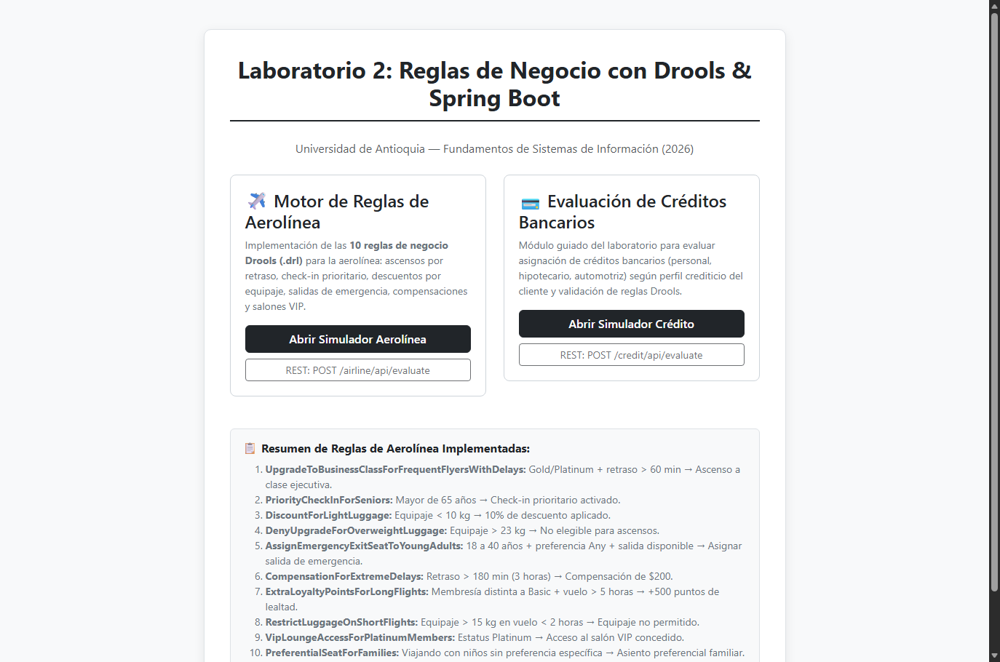
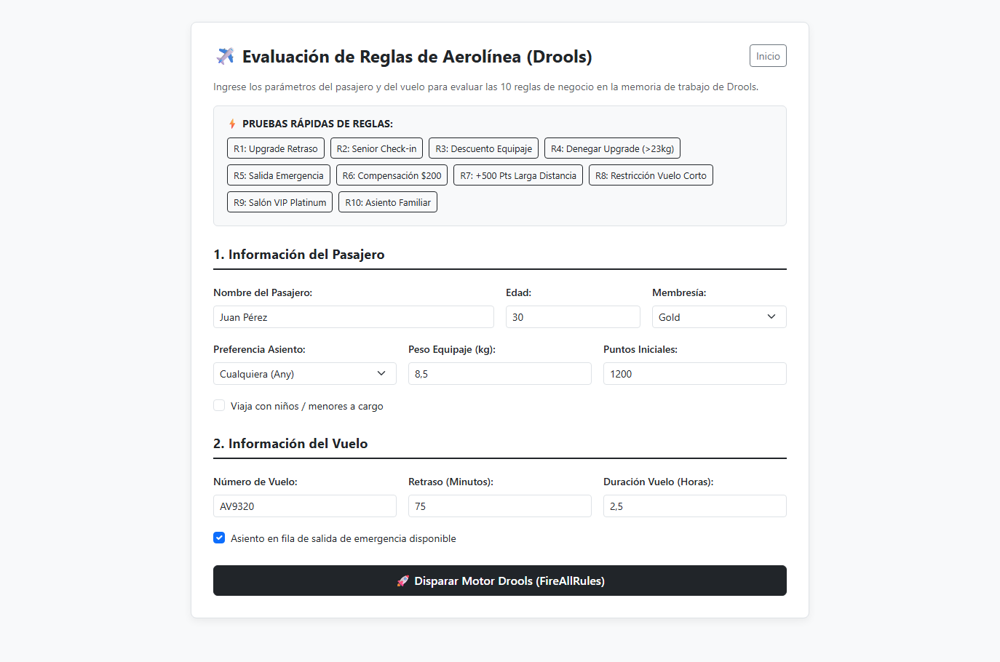
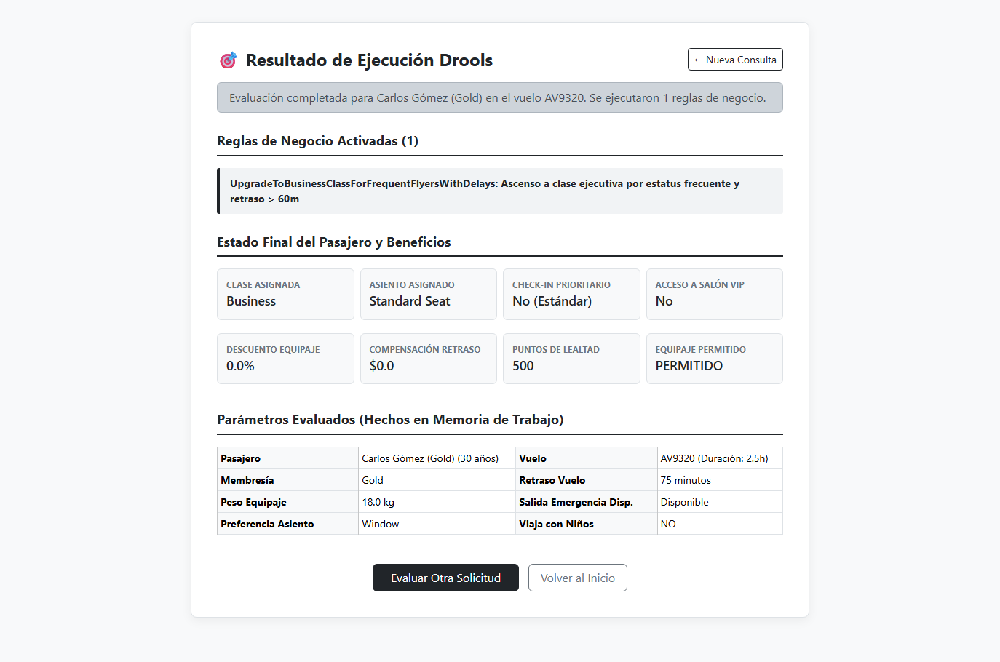
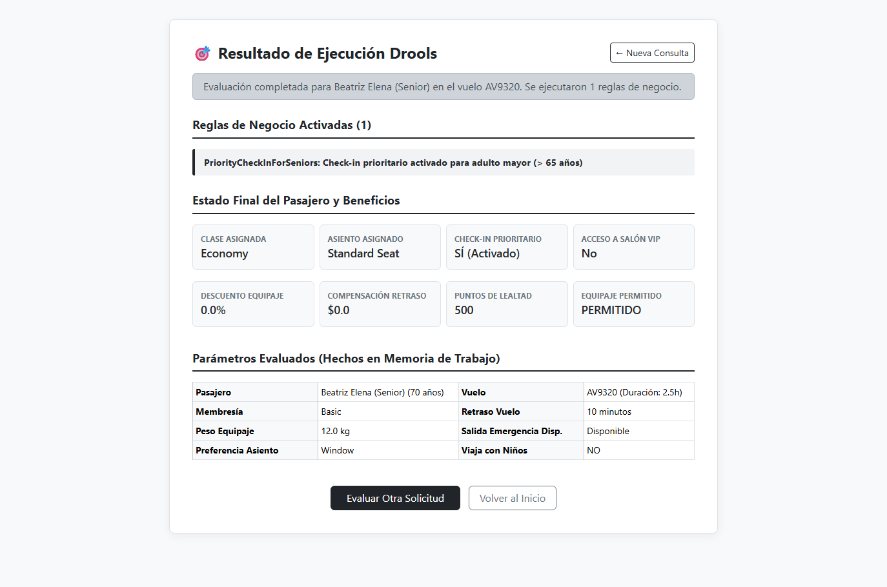
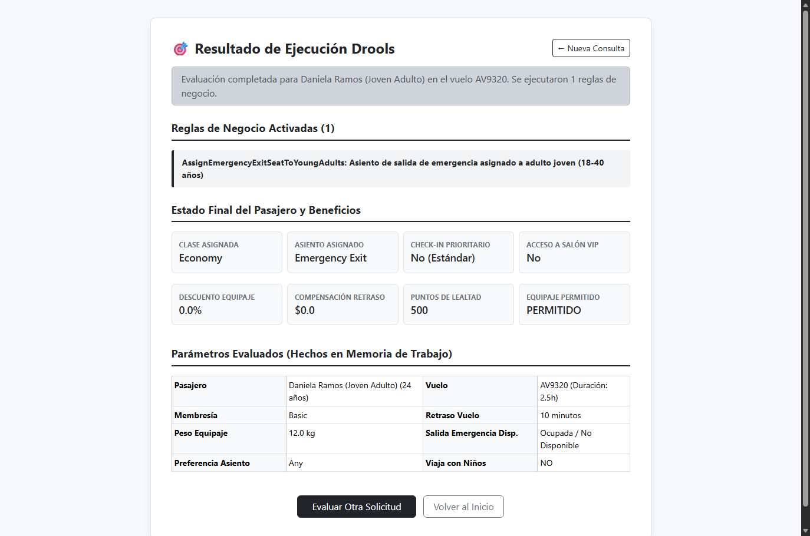
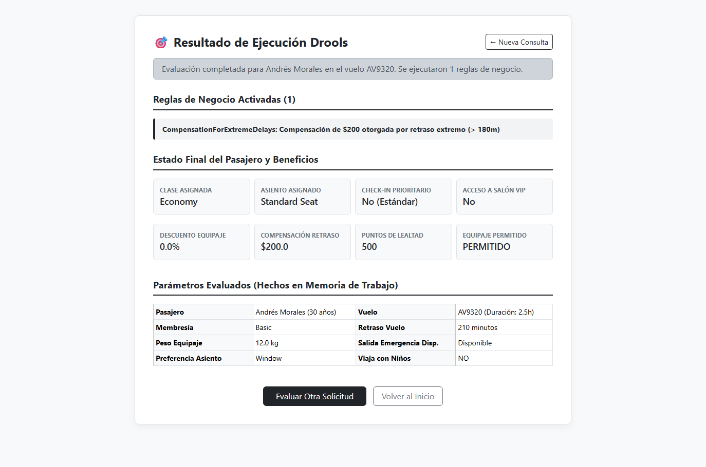
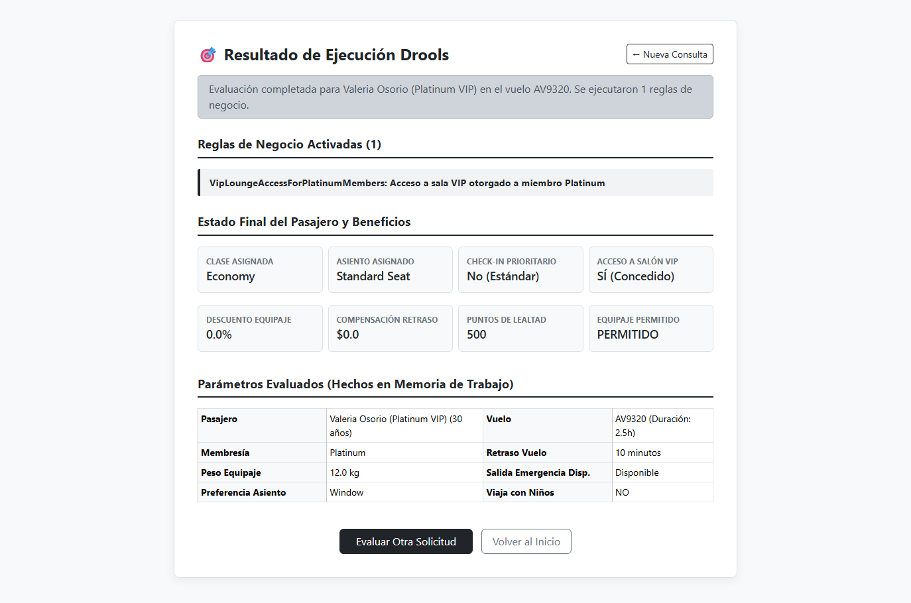
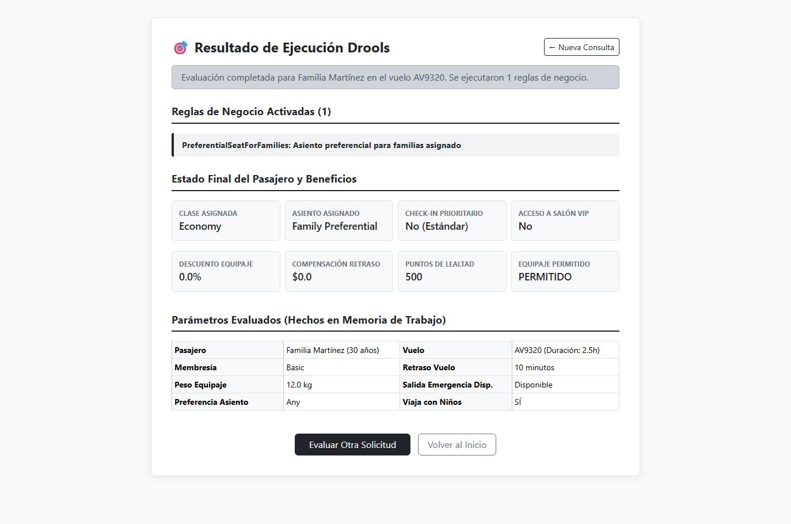
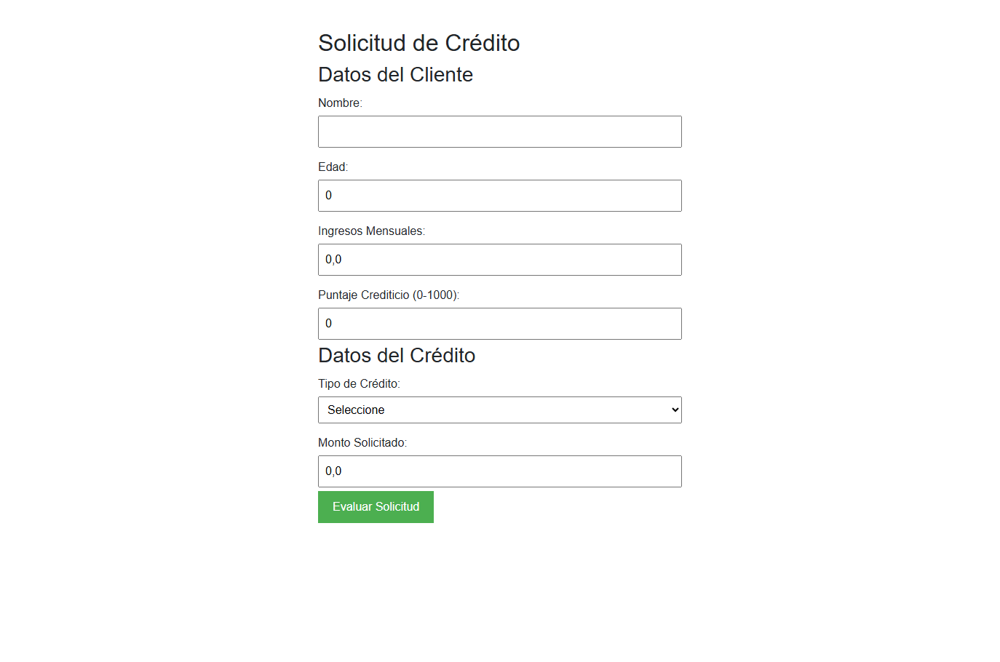
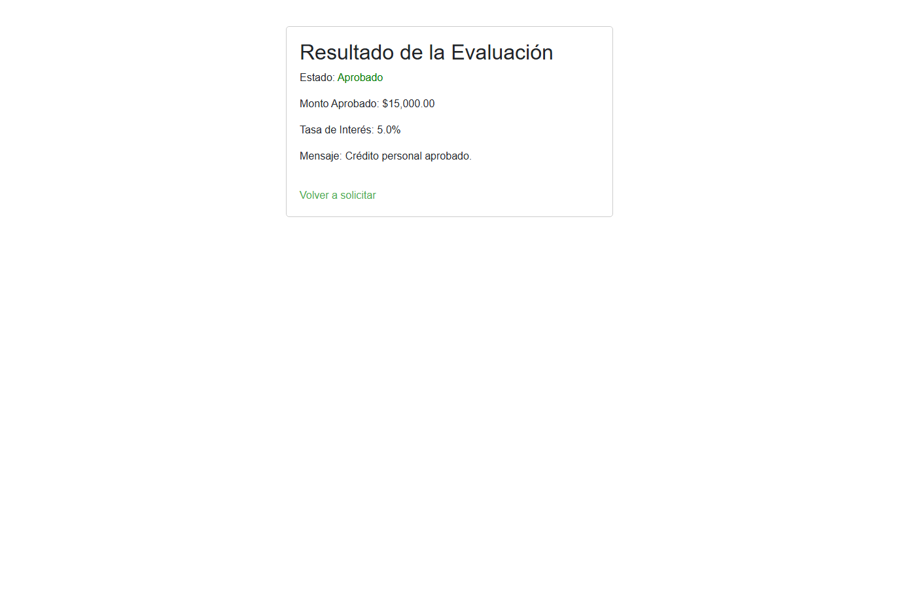

Universidad de Antioquia
Facultad de Ingeniería — Departamento de Ingeniería de Sistemas
Curso: Fundamentos de Sistemas de Información (2026)
Profesor: Diego Botia
Estudiante: Santiago Jaramillo
Fecha: Octubre de 2026
Repositorio GitHub: https://github.com/Santiagox01/lab2-fsi
Repositorio Guía Docente: https://github.com/diegobotia/droolsrules
El presente informe documenta la investigación, diseño, desarrollo y validación experimental del Laboratorio N° 2, centrado en la integración del motor de reglas de negocio Drools con el ecosistema Spring Boot 3 en Java 21.
Los Sistemas de Administración de Reglas de Negocio (BRMS - Business Rules Management Systems) representan un cambio de paradigma frente a la programación imperativa convencional, al permitir que la lógica de decisión corporativa se externalice en artefactos declarativos (.drl), desacoplándola del flujo procedimental del código de la aplicación.
En este trabajo se construyó una solución robusta y completa que abarca:
java.lang.Compiler en Java 21, logrando una compilación nativa y limpia mediante la actualización controlada de dependencias (mvel2 2.5.2.Final).En el desarrollo de software empresarial convencional, la lógica de negocio suele codificarse mediante estructuras condicionales anidadas (if-else, switch-case) dispersas a lo largo de las capas de servicio y controladores. Este enfoque monolítico introduce graves desventajas:
Un BRMS desacopla las reglas del negocio de la arquitectura de la aplicación. Las reglas se definen en un lenguaje específico del dominio (DRL - Drools Rule Language), permitiendo que la lógica sea declarativa, atómica y comprensible tanto para desarrolladores como para analistas.
Drools opera sobre una adaptación orientada a objetos del algoritmo Rete, propuesto originalmente por Charles Forgy en 1974. En lugar de evaluar secuencialmente cada regla contra cada objeto (lo cual tendría una complejidad computacional ineficiente de orden cuadrático o cúbico), Rete construye una red dirigida y acíclica de nodos en memoria:
age > 65, luggageWeight < 10.0).Passenger con un hecho Flight).Cuando un hecho se inserta o modifica en la memoria de trabajo (Working Memory), este se propaga únicamente a través de las ramas afectadas de la red Rete, garantizando tiempos de respuesta casi instantáneos incluso ante grandes volúmenes de datos.
.drl.insert), se ejecutan las reglas (fireAllRules) y se libera la memoria (dispose).El proyecto se organizó bajo la convención estándar de Maven y Spring Boot, estructurado en paquetes limpios según responsabilidades:
lab2-fsi/
├── pom.xml # Configuración de dependencias Spring Boot 3 + Drools 7 + MVEL 2
├── src/
│ ├── main/
│ │ ├── java/com/udea/droolrules/
│ │ │ ├── DroolrulesApplication.java # Clase principal de arranque Spring Boot
│ │ │ ├── config/
│ │ │ │ └── DroolsConfig.java # Configuración y Bean del KieContainer
│ │ │ ├── controller/
│ │ │ │ ├── AirlineController.java # Controlador web y REST del módulo de aerolínea
│ │ │ │ ├── CreditEvaluationController.java # Controlador web y REST del módulo de crédito
│ │ │ │ └── HomeController.java # Controlador del portal de bienvenida
│ │ │ ├── model/
│ │ │ │ ├── AirlineEvaluationRequest.java # DTO de entrada para la API de aerolínea
│ │ │ │ ├── AirlineEvaluationResponse.java # DTO de salida con trazabilidad de reglas
│ │ │ │ ├── Customer.java # Hecho del cliente bancario con validaciones
│ │ │ │ ├── CreditRequest.java # Solicitud de crédito
│ │ │ │ ├── CreditResponse.java # Resultado crediticio calculado
│ │ │ │ ├── Flight.java # Hecho del vuelo (número, retraso, duración, salida emergencia)
│ │ │ │ └── Passenger.java # Hecho del pasajero (edad, estatus, equipaje, asiento, clase)
│ │ │ └── service/
│ │ │ ├── AirlineEvaluationService.java # Servicio de orquestación de sesión Drools de aerolínea
│ │ │ └── CreditEvaluationService.java # Servicio de orquestación de sesión Drools de crédito
│ │ └── resources/
│ │ ├── application.properties # Propiedades de servidor y configuración
│ │ ├── rules/
│ │ │ ├── airline_rules.drl # Definición formal de las 10 reglas de la aerolínea
│ │ │ └── credit_rules.drl # Definición formal de las 6 reglas crediticias
│ │ └── templates/
│ │ ├── index.html # Portal de inicio para navegar entre módulos
│ │ ├── airline_form.html # Formulario interactivo de aerolínea con 10 presets
│ │ ├── airline_result.html # Vista de resultados y desglose de hechos
│ │ ├── credit_form.html # Formulario de crédito bancario
│ │ └── credit_result.html # Vista de resultados crediticios
│ └── test/java/com/udea/droolrules/
│ ├── AirlineRulesTest.java # 11 Pruebas unitarias para las reglas de aerolínea
│ ├── CreditRulesTest.java # 9 Pruebas unitarias para las reglas crediticias
│ └── DroolrulesApplicationTests.java # Prueba de verificación de carga del contexto Spring
DroolsConfig.java)Para permitir que la aplicación ejecute dinámicamente ambos dominios de reglas sin colisiones, la clase DroolsConfig compila en el mismo contenedor virtual tanto credit_rules.drl como airline_rules.drl:
@Configuration
public class DroolsConfig {
private static final KieServices kieServices = KieServices.Factory.get();
private static final String RULES_CREDIT_RULES_DRL = "rules/credit_rules.drl";
private static final String RULES_AIRLINE_RULES_DRL = "rules/airline_rules.drl";
@Bean
public KieContainer kieContainer() {
KieFileSystem kieFileSystem = kieServices.newKieFileSystem();
kieFileSystem.write(ResourceFactory.newClassPathResource(RULES_CREDIT_RULES_DRL));
kieFileSystem.write(ResourceFactory.newClassPathResource(RULES_AIRLINE_RULES_DRL));
KieBuilder kb = kieServices.newKieBuilder(kieFileSystem);
kb.buildAll();
KieModule kieModule = kb.getKieModule();
return kieServices.newKieContainer(kieModule.getReleaseId());
}
}
A continuación se detalla cada una de las 10 reglas programadas en src/main/resources/rules/airline_rules.drl, explicando su propósito de negocio, condiciones (When / LHS), consecuencias (Then / RHS) y estrategias de control de agenda (Salience y modificación de hechos en memoria de trabajo).
UpgradeToBusinessClassForFrequentFlyersWithDelaysupgradeEligible == true), que no esté ya en Business, y que aborde un vuelo con más de 60 minutos de retraso (delayMinutes > 60).assignedClass = "Business") y registro de la regla en el historial del pasajero.rule "UpgradeToBusinessClassForFrequentFlyersWithDelays"
salience 20
when
$p : Passenger(membershipStatus in ("Gold", "Platinum"), upgradeEligible == true, assignedClass != "Business")
$f : Flight(delayMinutes > 60)
then
$p.setAssignedClass("Business");
$p.getAppliedRules().add("UpgradeToBusinessClassForFrequentFlyersWithDelays: Ascenso a clase ejecutiva por estatus frecuente y retraso > 60m");
end
PriorityCheckInForSeniorsage > 65).priorityCheckIn = true).rule "PriorityCheckInForSeniors"
when
$p : Passenger(age > 65, priorityCheckIn == false)
then
$p.setPriorityCheckIn(true);
$p.getAppliedRules().add("PriorityCheckInForSeniors: Check-in prioritario activado para adulto mayor (> 65 años)");
end
DiscountForLightLuggageluggageWeight < 10.0).discountPercentage = 10.0).rule "DiscountForLightLuggage"
when
$p : Passenger(luggageWeight < 10.0, discountPercentage < 10.0)
then
$p.setDiscountPercentage(10.0);
$p.getAppliedRules().add("DiscountForLightLuggage: 10% de descuento por equipaje ligero (< 10kg)");
end
DenyUpgradeForOverweightLuggageluggageWeight > 23.0).upgradeEligible = false). Emplea la directiva modify($p) de Drools para notificar inmediatamente a la red Rete sobre el cambio en el hecho, cancelando cualquier activación previa de ascenso a Business.rule "DenyUpgradeForOverweightLuggage"
salience 30
when
$p : Passenger(luggageWeight > 23.0, upgradeEligible == true)
then
modify($p) {
setUpgradeEligible(false)
}
$p.getAppliedRules().add("DenyUpgradeForOverweightLuggage: Equipaje > 23kg, no elegible para ascensos");
end
AssignEmergencyExitSeatToYoungAdultsseatPreference == "Any"), que no viaje con niños, y en un vuelo con asiento de salida de emergencia disponible (emergencyExitAvailable == true).assignedSeat = "Emergency Exit") y marca la salida de emergencia como ocupada en el hecho del vuelo (emergencyExitAvailable = false).rule "AssignEmergencyExitSeatToYoungAdults"
salience 10
when
$p : Passenger(age >= 18, age <= 40, seatPreference == "Any", travelingWithChildren == false, assignedSeat != "Emergency Exit")
$f : Flight(emergencyExitAvailable == true)
then
$p.setAssignedSeat("Emergency Exit");
$f.setEmergencyExitAvailable(false);
$p.getAppliedRules().add("AssignEmergencyExitSeatToYoungAdults: Asiento de salida de emergencia asignado a adulto joven (18-40 años)");
end
CompensationForExtremeDelaysdelayMinutes > 180).compensationAmount = 200.0).rule "CompensationForExtremeDelays"
when
$p : Passenger(compensationAmount < 200.0)
$f : Flight(delayMinutes > 180)
then
$p.setCompensationAmount(200.0);
$p.getAppliedRules().add("CompensationForExtremeDelays: Compensación de $200 otorgada por retraso extremo (> 180m)");
end
ExtraLoyaltyPointsForLongFlightsmembershipStatus != null, membershipStatus != "Basic") en un vuelo con duración superior a 5 horas (durationHours > 5.0).loyaltyPoints += 500).rule "ExtraLoyaltyPointsForLongFlights"
when
$p : Passenger(membershipStatus != null, membershipStatus != "Basic")
$f : Flight(durationHours > 5.0)
then
$p.setLoyaltyPoints($p.getLoyaltyPoints() + 500);
$p.getAppliedRules().add("ExtraLoyaltyPointsForLongFlights: 500 puntos de lealtad adicionales por vuelo de larga duración (> 5h)");
end
RestrictLuggageOnShortFlightsluggageWeight > 15.0) en un vuelo con duración inferior a 2 horas (durationHours < 2.0).luggageAllowed = false).rule "RestrictLuggageOnShortFlights"
when
$p : Passenger(luggageWeight > 15.0, luggageAllowed == true)
$f : Flight(durationHours < 2.0)
then
$p.setLuggageAllowed(false);
$p.getAppliedRules().add("RestrictLuggageOnShortFlights: Equipaje > 15kg NO permitido en vuelo corto (< 2h)");
end
VipLoungeAccessForPlatinumMembers"Platinum" (membershipStatus == "Platinum").vipLoungeAccess = true).rule "VipLoungeAccessForPlatinumMembers"
when
$p : Passenger(membershipStatus == "Platinum", vipLoungeAccess == false)
then
$p.setVipLoungeAccess(true);
$p.getAppliedRules().add("VipLoungeAccessForPlatinumMembers: Acceso a sala VIP otorgado a miembro Platinum");
end
PreferentialSeatForFamiliestravelingWithChildren == true) y que no ha seleccionado una preferencia restrictiva de asiento (seatPreference == null || seatPreference == "Any").assignedSeat = "Family Preferential").rule "PreferentialSeatForFamilies"
salience 15
when
$p : Passenger(travelingWithChildren == true, seatPreference == null || seatPreference == "Any")
then
$p.setAssignedSeat("Family Preferential");
$p.getAppliedRules().add("PreferentialSeatForFamilies: Asiento preferencial para familias asignado");
end
Durante la fase de construcción del entorno de ejecución con Maven, se identificó un fallo crítico a nivel de máquina virtual originado por la arquitectura del compilador de expresiones de Drools:
Factory method 'kieContainer' threw exception with message: java/lang/Compiler
Caused by: java.lang.NoClassDefFoundError: java/lang/Compiler
La clase java.lang.Compiler fue marcada como obsoleta (deprecated for removal) a partir de Java 9 y fue completamente eliminada del JDK en Java 21. Las versiones estándar de Drools 7.74.x incluyen internamente dependencias transitivas de mvel2 anteriores a la versión 2.5.x, las cuales mantenían referencias estáticas a dicha clase para optimizaciones de bytecode en tiempo de ejecución. Al ejecutarse sobre OpenJDK 21.0.8, la JVM arrojaba un error irrecuperable al instanciar el contenedor de reglas.
Se resolvió forzando de manera explícita la dependencia de org.mvel:mvel2:2.5.2.Final en el archivo pom.xml. Esta versión elimina todo enlace con java.lang.Compiler, garantizando compatibilidad nativa con Java 21 LTS sin necesidad de degradar el compilador del sistema a Java 17 ni alterar la API pública de Drools:
<dependency>
<groupId>org.drools</groupId>
<artifactId>drools-mvel</artifactId>
<version>${drools.version}</version>
</dependency>
<dependency>
<groupId>org.mvel</groupId>
<artifactId>mvel2</artifactId>
<version>2.5.2.Final</version>
</dependency>
Para garantizar la fiabilidad formal del motor de reglas, se diseñaron 21 casos de prueba automatizados ejecutados mediante Maven Surefire Plugin:
| Clase de Prueba | Caso de Prueba | Parámetros de Entrada | Resultado Esperado | Estado |
|---|---|---|---|---|
| AirlineRulesTest | testRule1_UpgradeToBusinessClass | Gold, Retraso 75 min, Equipaje 18 kg | assignedClass == "Business" | PASÓ |
| AirlineRulesTest | testRule2_PriorityCheckInForSeniors | Edad 68 años | priorityCheckIn == true | PASÓ |
| AirlineRulesTest | testRule3_DiscountForLightLuggage | Equipaje 8.5 kg | discountPercentage == 10.0% | PASÓ |
| AirlineRulesTest | testRule4_DenyUpgradeForOverweight | Platinum, Retraso 90 min, Equipaje 26 kg | upgradeEligible == false, Clase Economy | PASÓ |
| AirlineRulesTest | testRule5_AssignEmergencyExitSeat | Edad 24 años, Asiento Any, Salida disponible | assignedSeat == "Emergency Exit" | PASÓ |
| AirlineRulesTest | testRule6_CompensationForExtremeDelays | Retraso 200 min | compensationAmount == $200.0 | PASÓ |
| AirlineRulesTest | testRule7_ExtraLoyaltyPoints | Membresía Silver, Vuelo 6.5 horas | Puntos aumentan de 1000 a 1500 (+500) | PASÓ |
| AirlineRulesTest | testRule8_RestrictLuggageOnShortFlights | Equipaje 18 kg, Vuelo 1.2 horas | luggageAllowed == false | PASÓ |
| AirlineRulesTest | testRule9_VipLoungeAccess | Membresía Platinum | vipLoungeAccess == true | PASÓ |
| AirlineRulesTest | testRule10_PreferentialSeatForFamilies | Con niños, Asiento Any | assignedSeat == "Family Preferential" | PASÓ |
| AirlineRulesTest | testCombinedScenario | Senior 70, Platinum, Equipaje 8 kg, Retraso 210m, Vuelo 6h | Se activan 6 reglas en armonía | PASÓ |
| CreditRulesTest | testPrueba1_RejectLowCreditScore | Score 450 | Rechazado: Score bajo | PASÓ |
| CreditRulesTest | testPrueba2_RejectUnderAge | Edad 16 años | Rechazado: Menor de edad | PASÓ |
| CreditRulesTest | testPrueba3_PersonalCredit_LowRate | Score 750, Personal | Aprobado: Tasa 5.0% | PASÓ |
| CreditRulesTest | testPrueba4_PersonalCredit_HighRate | Score 600, Personal | Aprobado: Tasa 8.0%, Monto ajustado a 10x ingresos | PASÓ |
| CreditRulesTest | testPrueba5_MortgageCredit_LowRate | Score 800, Hipotecario | Aprobado: Tasa 3.5% | PASÓ |
| CreditRulesTest | testPrueba6_MortgageCredit_HighRate | Score 650, Hipotecario | Aprobado: Tasa 4.5%, Monto ajustado a 50x ingresos | PASÓ |
| CreditRulesTest | testPrueba7_AutoCredit_LowRate | Score 720, Automotriz | Aprobado: Tasa 6.0% | PASÓ |
| CreditRulesTest | testPrueba8_AutoCredit_HighRate | Score 600, Automotriz | Aprobado: Tasa 7.5%, Monto ajustado a 20x ingresos | PASÓ |
| CreditRulesTest | testPrueba9_RejectInvalidCreditType | Ingresos insuficientes hipotecario | Rechazo genérico por tipo de crédito | PASÓ |
| DroolrulesApplicationTests | contextLoads | Contexto de Spring Boot | Carga correcta del contenedor | PASÓ |
[INFO] -------------------------------------------------------
[INFO] T E S T S
[INFO] -------------------------------------------------------
[INFO] Running com.udea.droolrules.AirlineRulesTest
[INFO] Tests run: 11, Failures: 0, Errors: 0, Skipped: 0 -- in com.udea.droolrules.AirlineRulesTest
[INFO] Running com.udea.droolrules.CreditRulesTest
[INFO] Tests run: 9, Failures: 0, Errors: 0, Skipped: 0 -- in com.udea.droolrules.CreditRulesTest
[INFO] Running com.udea.droolrules.DroolrulesApplicationTests
[INFO] Tests run: 1, Failures: 0, Errors: 0, Skipped: 0 -- in com.udea.droolrules.DroolrulesApplicationTests
[INFO]
[INFO] Results:
[INFO] Tests run: 21, Failures: 0, Errors: 0, Skipped: 0
[INFO] ------------------------------------------------------------------------
[INFO] BUILD SUCCESS
[INFO] Total time: 11.187 s
[INFO] ------------------------------------------------------------------------
Vista principal accesible en http://localhost:8080/, la cual centraliza el acceso interactivo tanto al simulador de aerolínea como al evaluador de créditos bancarios.

El formulario permite ingresar de forma precisa los hechos del pasajero y del vuelo. Incluye una barra de accesos directos (Presets) para cargar en un solo clic los parámetros correspondientes a cada una de las 10 reglas.

Evaluación de un pasajero categoría Gold en un vuelo con 75 minutos de retraso. Se observa el ascenso automático a Clase Ejecutiva.

Evaluación de un pasajero de 70 años. Se evidencia la activación del check-in prioritario en la memoria de trabajo.

Evaluación de un adulto joven (24 años) sin niños y con asiento flexible. Drools asigna la salida de emergencia y actualiza la disponibilidad del vuelo.

Evaluación de un vuelo con más de 180 minutos de retraso (210 min). El motor asigna la indemnización económica de $200 USD.

Evaluación de un pasajero con categoría Platinum. Se activa el beneficio exclusivo de acceso al salón VIP.

Evaluación de un pasajero que viaja con menores de edad. Drools asigna la fila preferencial para familias.

Capturas correspondientes a la evaluación de créditos personal, hipotecario y automotriz, contrastando un caso aprobado con un caso rechazado por puntaje crediticio deficiente (< 500).


| Criterio | Programación Imperativa (Java if-else) | Enfoque BRMS con Drools (.drl) |
|---|---|---|
| Mantenibilidad | Alta complejidad ciclomática cuando las reglas superan la decena. | Reglas atómicas e independientes; agregar una regla no perturba las existentes. |
| Complejidad Temporal | En el peor caso $O(N \times M)$ evaluando secuencialmente cada condición. | $O(1)$ a $O(\log N)$ gracias a la indexación de nodos Alpha y Beta de Rete. |
| Tiempo de Despliegue | Requiere recompilación de código Java, empaquetado del JAR y reinicio del servidor. | Las reglas pueden recargarse dinámicamente en caliente desde BD o repositorio Git. |
| Auditoría y Trazabilidad | Difícil saber qué rama condicional se activó sin instrumentar logs exhaustivos. | Cada regla activada queda registrada en la Agenda de Drools con trazabilidad nativa. |
| Resolución de Conflictos | Basada rígidamente en el orden físico de las sentencias if. | Manejo elegante mediante atributos salience, agenda-group y activation-group. |
Un hallazgo crítico durante el desarrollo fue el comportamiento de la regla 4 (DenyUpgradeForOverweightLuggage) frente a la regla 1 (UpgradeToBusinessClassForFrequentFlyersWithDelays).
Cuando un pasajero posee categoría frecuente pero su equipaje excede los 23 kg, la normativa de la aerolínea estipula que no debe ascender a clase ejecutiva. Si la regla 4 simplemente modifica el atributo en Java ($p.setUpgradeEligible(false)), Drools no reevalúa los patrones de la red Rete a menos que se invoque explícitamente el bloque:
modify($p) {
setUpgradeEligible(false)
}
Al utilizar modify, el motor actualiza el estado del hecho en todos los nodos de la red Rete, cancelando inmediatamente la activación de la regla 1. Esto demuestra la importancia de comprender la semántica interna de la memoria de trabajo de Drools frente a simples llamadas a métodos de instancia en Java.
.drl, dejando el código Java enfocado exclusivamente en la infraestructura, persistencia y exposición de servicios.mvel2:2.5.2.Final, superando las limitaciones derivadas de la deprecación de APIs nativas del JDK.